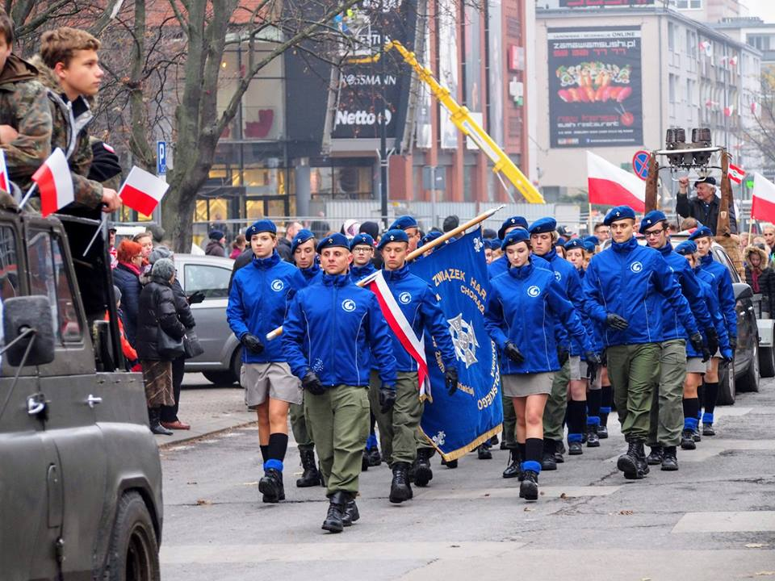

Chorągiew Gdańska ZHP
im. Bohaterów Ziemi Gdańskiej

Początki działaności harcerskiej w Gdańsku.
Harcerstwo gdańskie w okresie międzywojennym.
Działalność po II wojnie światowej.
| Chorągiew Gdańska ZHP im. Bohaterów Ziemi Gdańskiej | |
| Rodzaj jednostki | Chorągiew |
| Jednostka nadrzędna | Główna Kwatera ZHP |
| Jednostki podległe | 19 hufców |
| Rok powstania pierwszych drużyn | 1920 |
| Adres siedziby | ul. Za Murami 2-10 80-823 Gdańsk |
Chorągiew Gdańska współcześnie
| Hufiec | Adres | Komendant |
| Bytów im. Zawiszy Czarnego | Bd. | Bd. |
| Czarna Woda | Bd. | Bd. |
| Gdańsk-Wrzeszcz-Oliwa im. Obrońców Gdańskiego Wybrzeża | Bd. | Bd. |
| Gdańsk-Portowa im. Obrońców Westerplatte | Bd. | Bd. |
| Gdańsk-Śródmieście im. Alfa Liczmańskiego | Bd. | Bd. |
| Gdynia im. Bohaterów Gdyni | Bd. | Bd. |
| Kartuzy im. dr. Aleksandra Majkowskiego | Bd. | Bd. |
| Kościerzyna im. Franciszka Sędzickiego | Bd. | Bd. |
| Kwidzyn im. Kwidzyniaków | Bd. | Bd. |
| Lębork im. Polskich Olimpijczyków | Bd. | Bd. |
| Malbork im. Bohaterów Lotnictwa Polskiego | Bd. | Bd. |
| Miastko im. hm. Marii Hrabowskiej | Bd. | Bd. |
| Puck im. Obrońców Helu | Bd. | Bd. |
| Rumia im. I Brygady Pancernej | Bd. | Bd. |
| Ziemi Słupskiej im. Obrońców Wybrzeża | Bd. | Bd. |
| Sopot im. Marynarki Wojennej RP | al. Niepodległości 679 81-854 Sopot |
phm. Paulina Kwiatkowska |
| Starogard Gdański im. gen. Józefa Wybickiego | Bd. | Bd. |
| Tczew im. Władysława Sławomira Jurgo | Bd. | Bd. |
| Wejherowo im. Partyzantów Kaszubskich | Bd. | Bd. |